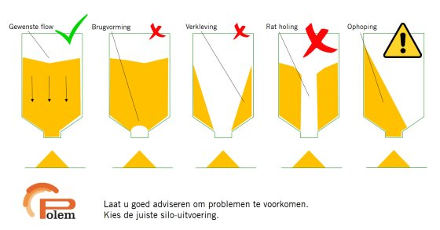

.jpg.jpeg)


.jpeg)

.jpeg)


Het bestellen van nieuwe voorraad door de veehouder
Op dit moment besteld de veehouder zijn voorraad wanneer hij denkt dat de voorraad bijna op is. Door de ervaring die hij in het verleden heeft opgedaan weet hij wanneer hij ongeveer nieuwe voorraad moet bestellen. Ook kan hij ongeveer zien hoeveel voorraad er in de silo zit als de zon er op de juiste plek op staat. Als de veehouder besluit om te bestellen neemt hij contact op met de veevoederleverancier. De veehouder kiest het soort voer wat hij wil, in welke silo het voer moet komen en de hoeveelheid die hij wil hebben. De veevoederleverancier begint pas met het produceren van het voer als de veehouder heeft besteld. De veevoeder weet op basis van historie wel welke grondstoffen zij wanneer ongeveer nodig zal gaan hebben per dag. De veevoederleverancier heeft vaak een levertijd van één werkdag (maandag tot en met zaterdagochtend zijn de werkdagen). De boer heeft echter ook de mogelijkheid om een spoedbestelling aan te vragen. Bij een spoedbestelling wordt dezelfde dag nog bezorgd als dit mogelijk is. Het voer wordt bezorgd doormiddel van een vrachtwagen. Deze vrachtwagens hebben verschillende kleppen waarbij de verschillende soorten voer in verschillende compartimenten worden bewaard. Vaak kan het ene voer alleen na het andere voer worden geleverd doordat de soorten niet met elkaar in contact mogen komen omdat er in sommige soorten voer vlees zit en in andere soorten er echt geen vlees mag komen te zitten. De vrachtwagen levert het voer vervolgens af bij de veehouder. De vrachtwagenchauffeur spuit het voer doormiddel van druk via een buis de silo in. Vaak is de veehouder niet aanwezig bij de levering van het voer en laat de vrachtwagenchauffeur de pakbon achter op de locatie van levering. Nadat het voer is geleverd ontvangt de veehouder de factuur over de levering.
Het meten van het verbruik door de veehouder
De veehouder meet op dit moment het verbruik van het voer door te kijken naar een gemiddelde verbruik wanneer de silo leeg is. Hij kan daardoor gemiddeld zien hoeveel voer er is gebruikt in een bepaalde periode. Dit is belangrijk omdat de veehouder hierdoor de voerconversie kan berekenen. De voerconversie is de hoeveelheid voer die de veehouder verbruikt voor een kilo vlees. De voerconversie van de verschillende soorten voer zijn bekend als een gemiddelde voerconversie van een gemiddeld varken bij de veevoederleveranciers. Deze informatie kan de veehouder ophalen en vergelijken met zijn eigen voerconversie. Gemiddeld per varken heeft hij dan achteraf een beeld van de voerconversie en daarmee dus informatie of de organisatie de juiste kant op gaat. Het beeld is achteraf omdat de veehouder de precieze kilo’s van het vee krijgt als deze naar de slacht gaan.
Knelpunten en problemen in de huidige situatie
Het bestellen van nieuwe voorraad door de veehouder
1.De veehouder weet niet precies wanneer de silo leeg gaat zijn. Door onder andere te kijken naar de hoeveelheid voorraad als de zon er op staat en doormiddel van zijn ervaring weet hij ongeveer wanneer hij nieuwe voorraad moet bestellen. Echter stroomt een silo niet evenredig leeg. Het komt namelijk voor dat een silo op een van de volgende manier leeg stroomt:
Doordat de veehouder tegen de zijkant van de silo aan kijkt krijgt de veehouder geen juist beeld van de werkelijke aanwezige voorraad;
2.De veehouder moet zelf bellen voor een bestelling. Dit kost de veehouder tijd en hierdoor is hij minder bezig met het primaire proces van de veehouderij;
3.Het is mogelijk in de huidige situatie dat de veehouder zonder voer zit;
4.De logistieke planning van de veevoederleverancier kan pas dezelfde dag of een etmaal van tevoren gemaakt worden. Hierdoor is de logistieke planning vaak niet optimaal;
5. Vrachtwagens vervoeren verschillend voer waardoor er een bepaalde volgorde van levering is. Dit beperkt de mogelijkheden van de logistieke planning.
Het meten van het verbruik door de veehouder
1.De voerconversie is een gemiddelde van het totale verbruik door het vee en niet specifiek per dier;
2.De voerconversie wordt achteraf pas duidelijk.En er zijn geen tussentijdse metingen